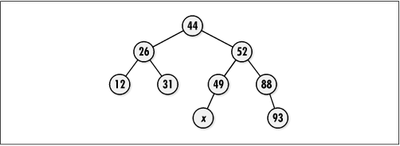

9.8 Questions and Answers
Q: Akin to
doubly-linked lists, some trees maintain pointers from child
nodes back to their parents in addition to the normal pointers
from parents to their children. Some trees maintain pointers
between sibling nodes as well. Why
might we do this?
A: In general,
maintaining additional pointers gives us greater flexibility
in how we traverse a tree. For example, maintaining pointers
from a parent to its children and from a child to its parent
lets us move both up and down through a tree. Maintaining
pointers between siblings gives us an easy way to traverse
through a node's children without accessing the parent. One
benefit of linked siblings is found in B +-trees,
a type of balanced search tree in which pointers are used to
link leaf nodes together. By linking leaf nodes, we
effectively form a linked list at the bottom of the tree. This
provides an efficient means of looking up a particular key and
then retrieving others that either precede or follow it in a
sequence. Database systems do this to support efficient random
and sequential access simultaneously. Of course, the
disadvantage is some overhead and complication in managing the
sibling pointers as children are inserted and removed.
Q: Recall that
the example on expression processing used a linked list to
return the appropriate ordering of the nodes to the caller.
This example illustrates two data structures pointing to the
same data. What precautions would we need to take in
destroying each instance of these datatypes?
A: All of the data structures
presented in this book follow the convention that only a
pointer is maintained to the data inserted into the data
structure. Therefore, it is the responsibility of the caller
to manage the storage associated with the data itself. In the
case of a binary tree and a linked list pointing to the same
physical data in memory, it is important that we pass a
function to free the data only to one of the initialization
operations. The other operation must set
destroy to NULL. Of course, this approach
assumes that the data being shared was dynamically allocated
in the first place. If the data structures point to data that
was not dynamically allocated, destroy should
be set to NULL in both initialization operations since there
is nothing to free.
Q: In bitree_rem_left and bitree_rem_right, why was a postorder
traversal used to remove the appropriate subtree? Could a preorder or
inorder traversal have been used instead?
A: It is essential to use a postorder
traversal here because a subtree must be removed in its
entirety before removing its parent. A preorder traversal ends
up removing the parent first, thus freeing the parent and
making it impossible to access its children. An inorder
traversal also does not work because we still end up removing
the parent before its right subtree.
Q: How do we find the smallest node
in a binary search tree? What is the runtime complexity to do
this in both an unbalanced and balanced binary search tree, in
the worst case? How do we find the largest node in a binary
search tree? What are the runtime complexities for this?
A: The
smallest node in a binary search tree is the node that is the
furthest to the left. To locate this node, we descend through
the tree by following left pointers until reaching the end of
the branch. In an unbalanced binary search tree, this requires
O (n) time in the worst case, where
n is the number of nodes in the
tree. This occurs when the tree consists of a single branch to
the left, for example. However, if we keep the tree balanced,
no branch will be longer than lg n nodes. Thus, the runtime complexity
of searching for the smallest node in this case is O (lg n). Finding the largest node is a
similar process, except that the largest node is the one that
is the furthest to the right in the tree. The runtime
complexities for this are the same as for locating the
smallest node. If we are interested only in determining the
smallest (or largest) element in a set of data repeatedly, we
use a priority queue (see Chapter
10).
Q: When
might we choose to make use of a tree with a relatively large
branching factor, instead of a binary tree, for example?
A: Larger
branching factors keep a tree shorter for a given number of
nodes, provided the tree remains relatively balanced.
Therefore, a large branching factor is desirable when an
application is particularly sensitive to the height of the
tree. Search trees are a good example, although typically the
difference in performance attributed to larger branching
factors is not that significant when the tree resides in
memory. This is one reason that binary trees are most common
for searching in memory. However, when searching in the
considerably slower world of secondary storage, a larger
branching factor can make a substantial difference. In this
situation, typically some type of B-tree is used (see the related topics
at the end of the chapter).
Q: In a binary search tree, the
successor of some node x is the
next largest node after x. For
example, in a binary search tree containing the keys 24, 39,
41, 55, 87, 92, the successor of 41 is 55. How do we find the
successor of a node in a binary search tree? What is the
runtime complexity of this operation?
A: To
determine the successor of some node x in a binary search tree, first we
locate x. Next, we follow its
right pointer, and then from this node, follow as many left
pointers as possible until the end of the branch is reached.
The node at the end of this branch is the successor of x. The runtime complexity of locating
either x or its successor is
O (lg n).
Q: In a binary search tree, recall
that to insert a node, we trace a specific path to determine
the proper point at which to actually insert it. As more and
more nodes are inserted into a tree, certain areas within the
tree become restricted to certain values. Ultimately, this is
why a tree falls out of balance and rotations are performed.
In the binary search tree of Figure
9.14, what are the possible values for a node inserted at
x?
A: In Figure
9.14, any node we insert at x must contain a value greater than
44 and less than 49 because any node to the left of 49 must be
less than 49. On the other hand, the only way for a node to
end up in the right subtree of 44 is to be greater than
44.

|